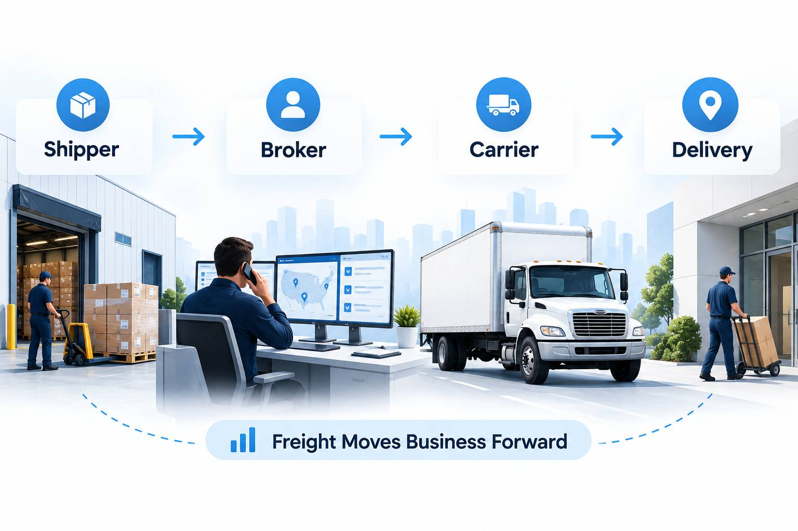
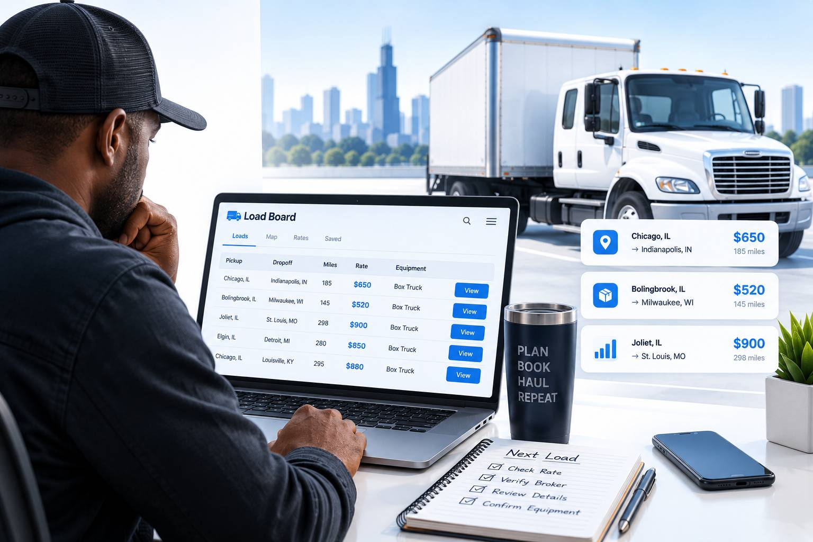
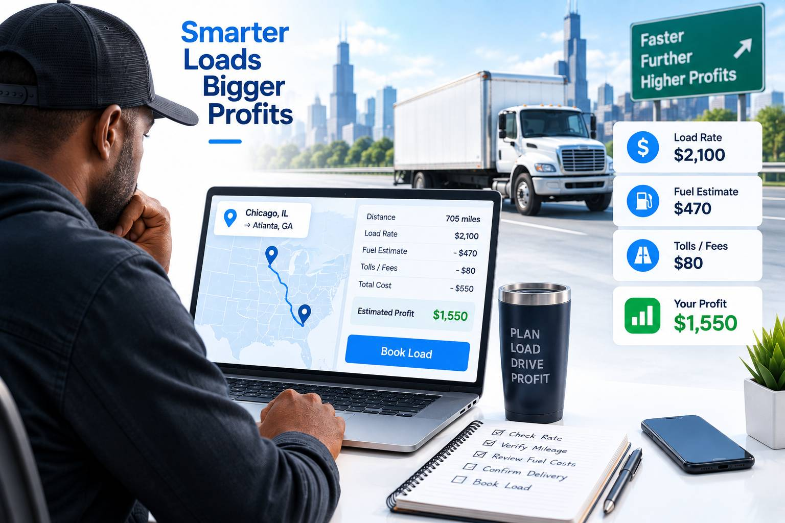

01 / The system
How Box Truck Freight Moves
A shipment begins with a customer that needs freight moved between two places on a defined schedule. The work may reach a carrier through a broker, a load board, a direct shipper relationship, or a recurring route agreement.
Before dispatch, the carrier should confirm the commodity, dimensions, weight, handling requirements, pickup and delivery appointments, total route miles, payment terms, and required documentation. The shipment is not financially complete when the truck unloads—it closes when the signed delivery record is accepted and the invoice is paid.
- 01Shipment created
The customer defines the freight, locations, schedule, and service expectations.
- 02Carrier selected
The broker or shipper confirms equipment fit, authority, insurance, availability, and price.
- 03Terms documented
The carrier receives written load details and resolves discrepancies before moving.
- 04Freight delivered
The driver protects the cargo, communicates exceptions, and obtains proof of delivery.
- 05Payment closed
The carrier submits the required documents and tracks the invoice through payment.

Shipper → broker → carrier → delivery. Direct work removes the broker from this chain, but not the need for written terms, documentation, and collection.
02 / Choose a path
Freight Acquisition Navigator
Answer four questions to identify a starting freight strategy that fits your current operation.
03 / Broker freight
Freight Brokers Explained
A freight broker arranges transportation between a shipper and an authorized motor carrier. The broker sells and manages the shipper relationship; the carrier supplies the truck, driver, and transportation service.
Good broker relationships are built on accurate equipment information, fast communication, reliable appointment performance, clean paperwork, and honest updates when a problem occurs. Before accepting a load, confirm exactly who is paying you, what the truck must do, and which documents trigger payment.
See the broker setup packetAfter successful delivery, send the required documents promptly, confirm receipt, and tell the broker which lanes, days, and equipment configurations you can cover again.
04 / Preparation
Broker Setup Packet
Prepare one controlled folder before contacting brokers. Use the same legal business name and address shown in your carrier registration, tax, banking, and insurance records. Mismatched names or outdated documents can delay setup and payment.
As you describe the loads and routes you plan to run, use our box truck insurance quote preparation guide to organize the information for your request.
- Carrier identityLegal name, DBA if applicable, USDOT and MC information, business address, dispatch contact, and emergency contact.
- Tax and paymentCurrent Form W-9, remittance details submitted through a secure method, and the email address that should receive settlement notices.
- Insurance evidenceA current certificate of insurance and the agent contact who can handle certificate requests or coverage questions.
- Equipment profileInterior dimensions, door opening, payload limit, dock height, liftgate, pallet jack, straps, blankets, and service radius.
- Operating documentsAny authority, registration, or other document the broker reasonably requests for the shipment and operating model.
- Process contactsWho accepts loads, who handles tracking, who sends proof of delivery, and who follows invoices through payment.
05 / Available freight
Load Boards
Load boards organize posted freight by origin, destination, date, equipment, and other filters. They can help fill open capacity, but a listing is only a lead—not proof that the load fits your truck or produces a profit.
Build narrow searches around the cities you can reach on time, your true cargo dimensions and payload, and where the truck will be positioned after delivery. Save repeat searches, record which contacts provide usable box-truck freight, and compare the complete trip before calling.
- Filter for straight truck or box truck equipment and verify the actual dimensions with the contact.
- Check pickup distance, appointment windows, delivery requirements, and likely repositioning miles.
- Ask whether the load requires a dock, liftgate, pallet jack, driver assist, inside delivery, or multiple stops.
- Confirm the broker or shipper identity independently before sending documents or accepting instructions.
- Get the agreed rate and service requirements in writing before dispatch.

06 / The decision
How to Evaluate a Load
Loaded-mile rate alone can hide an expensive trip. Add the miles from your current position to pickup, the loaded route, and the likely distance to parking or the next freight market. Then account for fuel, maintenance reserve, tires, tolls, payroll or driver compensation, insurance allocation, financing, dispatch or factoring fees, and other trip-specific expenses.
Operational fit matters too. A rate that looks acceptable can fail if detention consumes the next appointment, the freight does not fit through the door, the receiver requires equipment you do not carry, or the delivery leaves the truck far from the next opportunity.
- Equipment fitConfirm cargo dimensions, total weight, piece count, loading method, securement, and special handling.
- Schedule fitCheck pickup and delivery windows, drive time, traffic, breaks, parking, and the effect on the next commitment.
- Economic fitCompare pay with total miles and all variable or allocated operating costs—not only fuel.
- Payment fitReview the written rate, accessorial process, required documents, invoice method, and expected payment timing.
07 / Load decision utility
Should I Take This Load?
Use your own pay, mileage, and cost assumptions to test a load against your minimum margin.

Estimated load economics
- Load Pay
- —
- Total Miles
- —
- Total Deadhead
- —
- Rate / Loaded Mile
- —
- Rate / Total Mile
- —
- Estimated Operating Cost
- —
- Estimated Contribution
- —
- Estimated Margin
- —
- Deadhead %
- —
Enter load pay, loaded miles, and operating cost per mile to compare this load.
Estimated contribution is load pay minus mileage-based operating cost, tolls, and entered expenses. It is not net profit and may omit taxes, fixed overhead, payroll, financing, and timing of maintenance costs.
08 / First opportunities
New Authority Strategy
New carriers should confirm that every required registration, authority, insurance filing, and state requirement is active before pursuing freight. FMCSA explains that registration needs depend on the operation, cargo, and business classification; Illinois separately regulates many for-hire intrastate property operations.
Some brokers apply their own authority-age or experience standards. Instead of sending the same request everywhere, identify contacts that handle your equipment and service area, ask about onboarding requirements first, and keep a record of eligibility dates and follow-up notes.
- Start with a service area you can cover reliably instead of advertising nationwide capacity.
- Know the exact equipment, dimensions, payload, and handling services you can offer.
- Price every early load with the same cost discipline you expect to use later.
- Protect service performance: communicate early, preserve documents, and avoid accepting freight you cannot execute.
- Build direct-customer outreach alongside broker and load-board activity so one channel does not control the business.
09 / Due diligence
Broker Vetting
Verify the company through an independent source rather than relying only on a posting, email signature, caller ID, or document sent by the person offering the load. FMCSA’s free SAFER Company Snapshot provides company identification and safety information, while Licensing & Insurance information can help confirm authority and filings.
Compare the legal name, USDOT or MC number, phone number, email domain, and payment instructions. If contact or banking information changes unexpectedly, stop and verify through a previously confirmed channel. Read the broker agreement and rate confirmation before dispatch, including accessorial approval, claims, document submission, and payment provisions.
Resolve identity, authority, rate, service, and payment discrepancies before the truck moves. Urgency is not a substitute for verification.
10 / Pricing
Rate Negotiation
Negotiation starts before the call. Know your total route miles, estimated operating cost, minimum acceptable contribution, schedule limits, and equipment advantages. A defensible counteroffer connects the requested rate to a specific cost or service requirement.
- State the equipment fitExplain the box size, payload, liftgate, pallet jack, securement, or delivery capability that matches the shipment.
- Name the complete routeInclude pickup deadhead, loaded miles, delivery repositioning, toll exposure, and additional stops.
- Price added serviceClarify detention, driver assist, inside delivery, liftgate use, extra stops, redelivery, or schedule changes before accepting them.
- Confirm the agreementDo not rely on a verbal number. Review the final written rate confirmation and request corrections before dispatch.
11 / Own the relationship
Direct Shippers
Direct freight begins with a specific service promise: what you move, where you operate, which equipment you provide, when you are available, and how the customer receives delivery updates and documents.
Build a prospect list from businesses whose shipment profile fits the truck. Contact the person responsible for shipping, logistics, operations, purchasing, or branch management. Ask about recurring problems—overflow, urgent replenishment, scheduled transfers, final-mile appointments, returns, or routes that do not fit a larger trailer—before offering a solution.
Direct work also transfers more responsibility to the carrier. Establish written service terms, credit and payment procedures, cargo information, insurance requirements, points of contact, proof-of-delivery expectations, and a process for exceptions.
Explore Illinois customer strategy12 / Local market
Chicago & Illinois Customer Strategy
Organize prospecting by operating zone rather than chasing unrelated businesses across the state. A carrier might define separate zones for Chicago neighborhoods, the suburban industrial corridors, northern Illinois, central Illinois, or specific repeat lanes—but should only promise areas it can serve consistently.
Potential box-truck customers can include distributors, manufacturers, commercial suppliers, printers and sign companies, furniture and fixture businesses, event or rental companies, restoration suppliers, and businesses that transfer inventory between branches. The right prospect is determined by freight dimensions, weight, handling, schedule, and service needs—not simply the customer’s industry.
- Create a list of 25–50 businesses within one practical service zone.
- Record the shipping contact, freight type, dock or liftgate needs, delivery area, and likely schedule.
- Lead with one relevant service instead of a general statement that you own a truck.
- Use a consistent follow-up schedule and record every conversation.
- Review insurance, authority, and contract requirements before agreeing to the first shipment.
13 / Repeat freight
Dedicated Routes
A dedicated route is recurring work with a defined frequency, service area, or customer schedule. Consistency can improve planning, but only when the agreement accounts for the entire commitment: reserved truck time, empty repositioning, seasonal volume, wait time, extra stops, handling, backup expectations, and payment terms.
Before quoting, run the proposed route as a complete weekly or monthly service. Estimate total miles and hours, identify days when the truck cannot accept other work, and decide how cancellations or added stops are handled. Start with a trial period when possible, measure actual time and cost, and review the rate before committing long term.
14 / Channel comparison
Broker Freight vs Direct Freight
Both channels can work. Compare them by the role each plays in your freight mix.
15 / Close the loop
Payment & POD Workflow
Set up the payment file when the load is booked—not after delivery. Save the signed rate confirmation or customer order, pickup documentation, delivery instructions, receipts, approved accessorials, and the correct billing contact in one load folder.
- Before pickup: confirm the legal payer, agreed amount, invoice method, required references, accessorial approval process, and payment terms.
- At pickup: compare the freight with the paperwork and record exceptions before leaving.
- At delivery: obtain a legible signed proof of delivery and document shortages, damage, refused freight, or schedule issues.
- After delivery: submit the invoice and every required attachment through the specified portal or email.
- Until paid: confirm receipt, record the due date, follow up consistently, and preserve the complete communication trail.
16 / Avoid the traps
Common Mistakes
- 01
Taking a load without pricing the full trip
Deadhead to pickup, tolls, delivery repositioning, handling time, and the next available lane all belong to the decision.
- 02
Accepting freight before confirming equipment fit
Verify dimensions, weight, door clearance, loading method, securement, liftgate needs, and every stop before dispatch.
- 03
Depending on one freight source
Use broker relationships and load boards for available freight while steadily building direct and recurring customers.
- 04
Treating urgency as verification
Independently confirm the company, authority, contact information, written terms, and payment instructions before moving.
- 05
Skipping the paperwork trail
Preserve the rate confirmation, pickup records, approved accessorials, proof of delivery, invoice, and follow-up history.
- 06
Promising a service area that is too large
Reliable coverage of a focused area is more useful to a customer than inconsistent statewide availability.
17 / Build momentum
30-Day Freight Acquisition Plan
Use the first month to build a repeatable operating and sales process—not to accept every available shipment.
- Week 1
Get Load-Ready
Confirm active authority and insurance requirements, document truck dimensions and payload, calculate operating cost, define a service zone, assemble the carrier packet, and create one load folder template.
- Week 2
Build Broker Relationships
Identify brokers that handle your equipment and lanes, ask about onboarding standards, complete eligible setups, create saved load searches, and track every contact in one pipeline.
- Week 3
Prospect Direct Shippers
Build a focused local prospect list, identify shipping or operations contacts, make a specific service offer, record freight requirements, and schedule follow-up rather than relying on one call.
- Week 4
Build Repeat Freight
Review quoted and completed loads, compare estimated costs with actual results, submit documents promptly, ask successful contacts about the next shipment, and narrow the lanes and customer types worth repeating.
18 / Action workspace
Freight-Ready Checklist
Organize the business, carrier, truck, broker, pricing, and customer details you may need before pursuing freight.
You have organized the major business, carrier, equipment, broker, load-evaluation, and customer-development items covered in this guide.
19 / Questions
Box Truck Freight Questions
Use these answers as a starting point, then verify each opportunity against your authority, equipment, insurance, operating costs, and written load terms.
Where can a new box truck carrier look for loads?
Common starting points include load boards, freight brokers that accept your authority profile, direct outreach to local shippers, and referrals from existing business relationships. Confirm that each opportunity fits your operating authority, equipment, service area, and insurance before accepting it.
How should I compare two loads?
Compare total pay against every mile and expense attached to the trip—not only loaded miles. Include deadhead to pickup, repositioning after delivery, tolls, operating cost, schedule requirements, and payment terms. The calculator above can organize those inputs consistently.
What should I ask before accepting a box truck load?
Confirm the commodity, piece count, dimensions, weight, declared value where relevant, loading method, securement, pickup and delivery appointments, stops, driver-assist requirements, total pay, accessorial process, required documents, and payment terms.
How can I verify a freight broker?
Use independent FMCSA records to compare the company’s legal identity, USDOT or MC information, authority, and available licensing and insurance data. Verify unexpected contact or payment changes through a previously confirmed channel before dispatch.
Do Illinois intrastate carriers need separate authority?
The Illinois Commerce Commission states that businesses engaging in for-hire transportation of property wholly within Illinois generally need a Public Carrier Certificate unless an exemption applies. Federal authority does not automatically replace an Illinois requirement for intrastate operations.
When does direct freight make sense?
Direct freight can make sense when you can define a reliable service area, equipment fit, schedule, and rate, then consistently manage customer communication, delivery, documentation, and invoicing. It normally requires more prospecting and follow-up than broker freight.
20 / Verify requirements
Official Sources
Rules and registration systems change. Use the official agencies below to verify authority, insurance filing, Illinois intrastate, and tax-document requirements for your operation. This guide is educational and is not legal, tax, or accounting advice.
- FMCSA registrationDetermine federal registration and authority requirements
- FMCSA company recordsSearch the free SAFER Company Snapshot
- FMCSA insurance filingsReview federal insurance filing requirements
- Illinois intrastate operationsReview Illinois Commerce Commission property-carrier guidance
- Illinois authority searchSearch Illinois motor carrier authority records
- Tax documentationGet the current IRS Form W-9 and instructions
Motive Insurance
Ready to Keep Your Box Truck Moving?
Freight readiness takes planning. When you need help reviewing the insurance side of your operation, Motive’s trucking team can talk through your coverage path.
Contact Motive